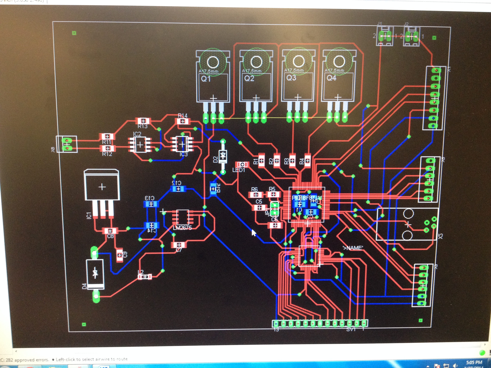

Completed the CAD drawing of our design as well as the PCB footprint. Pictures displayed below:


January 15, 2014 (1.5 hour):
Met as a team to discuss and start writing the preliminary project proposal.
January 16, 2014 (1 hour):
Finished editing and writing the preliminary project proposal. Mostly did the research on already existing products out.
January 18, 2014 (2 hour):
Helped design and put together the website. Mostly the layout and graphics of what the site will look like.
WEEK 01 SUMMARY
Accomplishments: Put together the website and finished the preliminary project proposal.
Weekly Work Total: 4.5 hours
Project Work Total: 4.5 hours
January 26, 2014 (1 hour):
Finished up homework 1 including making the schedule.
WEEK 02 SUMMARY
Accomplishments: Finished up homework 1 as a team.
Weekly Work Total: 1 hours
Project Work Total: 5.5 hours
January 29, 2014 (30 minutes):
Started work on the PCB tutorial.
January 30, 2014 (1 hour):
Finished PCB tutorial.
WEEK 03 SUMMARY
Accomplishments: PCB tutorial was completed.
Weekly Work Total: 1.5 hours
Project Work Total: 7 hours
February 5, 2014 (2 hours):
Came up with multiple options of how to build the mechanical design of the project that are listed below with links to the project description.
Option 1 (use this and cut holes out of plastic -> towards idea of rotating disco ball or use a wiffle ball): http://www.nationalbuildersupply.com/progress-lighting-white-1+light-post-light-p5446+60/p12892?utm_source=shopping&utm_medium=cse&utm_campaign=Progress%20Lighting&utm_term=P5446-60
Option 2 (disco ball with lights flashing at it):
http://www.youtube.com/watch?v=Qnm_IXD6tNM
Option 3 (different flashed in a ball):
http://www.flickr.com/photos/macetech/4235536612/in/set-72157623116877654/
Option 4 (string of lights):
http://dingweilighting.manufacturer.globalsources.com/si/6008847873232/pdtl/Christmas-light/1064677996/70cm-LED-Christmas-Ball-Motif-Lights.htm
Option 5 (half circle idea):
http://www.dhgate.com/product/christmas-new-led-star-crystal-ball-magic/146611479.html#s1-5-1|1767851088
Option 6 (design round object with ping pong balls or glue to inside of a plastic circle from option 1):
http://www.uchobby.com/index.php/2008/03/03/rgb-led-ping-pong-ball-light/
Option 7 (one single sphere that spins fast enough that creates circle):
http://www.zigwire.com/projects/sphere/sphere.php
Option 8 (round ball):
http://hackaday.com/2011/10/16/we-want-this-led-ball/
Option 9 (lasers - but on a bigger scale and prob can use LEDs rather than lasers and have it sit on a tray thing and spin the tray):
http://www.slashgear.com/diy-laser-ball-is-21st-century-human-cat-toy-17196054/
Option 10:
Using a 6" diameter pipe. You could drill holes in the exterior. You could put it
On rollers. The rollers, could have a motor attached and the lights could go in the middle.
February 6, 2014 (1.5 hour):
Met as a team to complete hw 3.
Finalized a design that we wanted for the external system. With the design, we determined that we will need to 3D print a part in order to mount the disco ball on the motor. Many major components were selected including using an LED driver to help with controlling the 3 phase LEDS. A picture of the initial design is pictured below:
WEEK 04 SUMMARY
Accomplishments: Settled on design idea for the project as well as finished hw 3.
Weekly Work Total: 3.5 hours
Project Work Total: 10.5 hours
February 10, 2014 (1.5 hours):
Started hw 4 of packaging and compiled a list of all the parts and how much each weigh to get an approx weight for our project of 6.5 lbs.
February 12, 2014 (3 hours):
Completed the CAD drawing of our design as well as the PCB footprint. Pictures displayed below:
February 13, 2014 (8 hours):
Figured out how everything is going to work together, so basically configured a basic schematic. Most of the parts were switched and changed at this point. The motor that was originally selected was too powerful and too big for the design, so we decreased the size and power to a simplier stepper motor. Due to the microcontroller needed 3.3V, the Raspberry Pi needing 5V, and the motor needing 12V one of the biggest problems was faced was how to get that all supplied to the parts correcty including using a 12V power supply. The schematic is drawn below:
February 12, 2014 (1 hour):
Completed hw 4.
WEEK 05 SUMMARY
Accomplishments: Finished homework including the CAD drawing and inital schematic draw ups.
Weekly Work Total: 13.5 hours
Project Work Total: 25 hours
February 18, 2014 (4 hour):
Started drawing up the schematic layout on eagle. Had to create parts for the LED driver, Microcontroller, LED, and the voltage regulator.
February 19, 2014 (3 hour):
Met as a team in lab and got feedback on the schematic I drew up. Originally, I was using a LM7805 and a capacitor to drop the voltage from 12V to 5V and then a voltage regulator to drop the voltage from 5V to 3.3V. However, the transistor would cause a lot of heat consumption, so the 12V to 5V will now be regulated by a switch mode with a heat sink..The schematic continued to be worked on getting most of the resistors and capacitors selected.
February 20, 2014 (8 hour):
Drew up and added the parts to the eagle schematic. Had to draw up the microcontroller, LED drivers, LEDS, and 2 voltage regulators. By drawing these, I had to finish figuring out the rest of the circuitry.
February 21, 2014 (10 hour):
Finished figuring out the pins and circuitry. Then drew up all the circuitry to the right pins in which the LED driver was to i/o pins and i2c pins. The rpi was connected by sdi,sdo,sclk and also had to be connected by audio to a analog pin. The motor was connected to PWM ports. The LED driver had to be connected to the SDI,SDO,SCLK as well, so a chip select was enabled since the micro is running everything it will have to switch between talking to the raspberry pi and the LCD.
External parts to PCB board schematic:
PCB board schematic:
WEEK 06 SUMMARY
Accomplishments: Figured out the rest of the parts of the project. Also, figured out the pins and how to draw everything up and drew up the schematic on eagle.
Weekly Work Total: 25 hours
Project Work Total: 49 hours
February 24, 2014 (1 hour):
Started the PCB footprint by places all the parts on the board in a manner that you can see the wires connecting.
February 25, 2014 (5 hours):
Re-did the layouts of the LED driver, micro, and both voltage regulators so they were to size. We even took the part and layed it out on the sheet to make sure that they were the correct dimensions. While we did this, we realized that the the leads on the the layout had to be a little bit longer than specificied to make it easier for later on when we have to solder the parts onto the LED driver. Another thing that was accomplished was the values of the resistors were calculated in order to drop 5V down to 3.3V of the MAX856CSA. I also changed the power to drop 12V to 5V to a more genaric part of a LM2675 because that was what I discussed would be the best regulator with the great power being dissipated in the circuit. Added LED flashing to see the "heartbeat" of the microcontroller to make sure the I/O pins are still working. An RJ11 connector was added to the programming pins to allow the micro to be programmed.
February 26, 2014 (2 hours):
Kept placing and grouping parts on the PCB board layout. These items were grouped to allow for the least amount of crossing of wires and the orientation of where everything is being mounted externally that will be connected to PCB board. Once, that was finished the traces were simply layed out.

February 27, 2014 (4 hours):
Kept going with PCB layout and traces. Had to keep analog and digital ground seperate from each other until combined at the very end for the power supply. Followed Sparkfun's library for specifications on the PCB layout, so they are able to design it at the fabrcication shop correctly. Also, I changed the MAX856CSA to a LM1117 since the MAX856CSA was a step-up regulator when we needed a low dropout regulator which was the LM 1117.

March 1, 2014 (1 hour):Met briefly to break up powerpoint slides up to figure out what each person was going to talk about.
WEEK 07 SUMMARY
Accomplishments: Changed parts around on the PCB board including dimensions of the LED driver, Microcontroller, and both the voltage converters. Circuitry was improved and looked over by team. Started PCB layout of the traces.
Weekly Work Total: 13 hours
Project Work Total: 62 hours
March 2, 2014 (2 hour):Started building the slides for the presentation. Broke up the presentation even more. I was in charge of talking about the mechanical design and the schematic.
March 3, 2014 (2 hour): Finished building the slides for the presentation. Made a couple changes to our schematic including changing a 0 ohm resistor to connect gnd and agnd together because those have to stay seperate until the very end. Schematic that was finally presented:
March 4, 2014 (4 hour): We practiced our design review together. Made a couple changes to our powerpoint because we were missing key points. After design review, we corrected a few things including adding a resistor to the heartbeat LED, made mounting holes on PCB board, fixed board lines so they were straight, and changed the inductor and capacitor so they would match the parts we had in stock.
March 6, 2014 (2 hour): Started researching into voltage regulators for power circuit. Currently our power circuit was not going to work since we need to output of at least 3 A in order for the LEDs to work and the current voltage regulators only outputed 1.5 A.
WEEK 08 SUMMARY
Accomplishments: Succesful presentated our progress at design review and started to fix the feedback we received.
Weekly Work Total: 10 hours
Project Work Total: 72 hours
March 10, 2014 (5 hour): Discussed the need for logic level translators. This is because the LED driver runs on 5V, but we needed a 3.3V logic supply. After thinking about our options, we realized that we could sink the LEDs and have the supply voltage of 5 V to LEDs and 3.3V to LEd driver so that the logic would work and also that we would only have to use 1 switch mode regulator to power enough current to the system. We then thought that the motor would need a voltage regulator because of the needed logic voltage and ultimately we decided that we would not need one because the voltage we were going to supply would allow the motor to realize if it was running high or low. Ultimately, the power circuit was changed. We used a switch mode regualtor of a LM2596s from 12V to 5V to maintain the current needed to power the LEDs. Because we changed that the LEDs were going to be powered at 5V not 3.3V, we could use a LM1117 to drop the voltage from 5V to 3.3V which is recommended because many problems occur with a switch mode regualtor.
March 11, 2014 (7 hour): Met with Meyer and we discussed various things with the schematic. The audio circuit needed to be changed since I had two envelope detectors, only one was needed. Since we did not have all the parts the test it, a 10K potentiometer was added just in case we need it to help us to make the audio circuit to work. Even thought the motor driver would work with the logic voltage of 3.3V, a voltage translator from 3.3V to 5V was included to be safe. For the LEDs, the schematic does not need to change, but the anodes of the LEDs will connect to power and as for the LED driver when you drive it low LEDs will turn off. For the LM 2596s, the capactiors and inductors need to be exactly what the data sheet says and that proved to be difficult since some of the parts that fit it would not be in stock at the store. But it was ultimately figured out and the schematic was finished:
March 12, 2014 (1 hour): Met as a team to make sure the schematic looked good and if anything else needed to change, but nothing was needed besides an inductor had to change because it was not in stock online.
March 13, 2014 (3 hour): Some more parts came in and checked that with the PCB print out. Some parts needed to change to fit, but for the most part everything fit. A bill of materials was printed out and all items were collected from parts store and if they were not in parts store they were ordered, so all parts should be here besides the 3D part.
March 14, 2014 (1 hour): PCB was submitted and I was named the main contact for it if there was anything wrong with it. The PCB ended up being 4.94 inches by 3.75 inches.
WEEK 09 SUMMARY
Accomplishments: Schematic was completed and PCB was ordered.
Weekly Work Total: 17 hours
Project Work Total: 89 hours
WEEK 10 SUMMARY
Accomplishments: Spring break, was away from campus.
Weekly Work Total: 0 hours
Project Work Total: 89 hours
March 23, 2014 (2 hours): Started drawing the 3D part for the mechanical design of connectign motor to the disco ball and met as a team to figure out the plan for rest of semester. I still have mechanical design, circuit testing, and soldering to do.
March 24, 2014 (3.5 hours): Designed the 3D part. Put parts on the PCB printout and the tri-state voltage and the LM1117 do not fit. However, where the parts were placed there is plenty of room to solder wires to connect the components. Finally, the audio circuit prototype was built:
March 25, 2014 (1 hour): Drew on the enclosure of where we want to drill things out for the LCD, motor, and pushbuttons to be places. I also worked on the CAD drawing of our 3D part.
March 26, 2014 (4 hours): Two parts (LM1117 and the logic level translator was the wrong package), so we found the correct packages and ordered the new parts. I also worked on the audio circuit. With the audio circuit, we have something wrong with the soldering joints of the op-amp so we were going to need to get a protoboard to solder it to. Finally, the 3D part was fixed because the cylinder was too thin and would never hold on the motor shaft.
March 27, 2014 (4.5 hours): Found a protoboard and soldered the LM264 to the proto board, PCB came in, and figured out we made a mistake on the tracing. The I2C pins are not connected to the right ports on the micro and the VDD and VSS were switched when connecting to power and ground. To fix these issues we are going to have to break the trace and fly wire. With the I2C pins we will fly wire from the resistors and the VDD and VSS we will go from the via.
March 28, 2014 (3.5 hours): Submitted the request for a 3D printed part. Went back to debugging the audio circuit in which the op amp would work occasionaly but could not get the diode to work. Still needs lots more work on audio circuit. I also searched how to do the motor code on the microcontroller to control the speeds of the motor and it will be done by sending a pulse wave of a square wave on the 4 wires wires all once at a time and the frequency of sending pulses controlls the speed and the driver these are sent to our programmed with logic pins that will determine direction of movement or if moving at all and then all this data is sent to the 4 wires of the motor.
March 29, 2014 (3 hours): Soldered the power circuit with the 12V to 5V voltage regulator and tested it overnight and it works. Waiting on the LDO to come in so I can finish the power circuit. Also, learned how the webapp is being built and will start doing the CSS for the webapp.
WEEK 11 SUMMARY
Accomplishments:
Weekly Work Total: hours
Project Work Total: hours
WEEK 12 SUMMARY
Accomplishments:
Weekly Work Total: hours
Project Work Total: hours
WEEK 13 SUMMARY
Accomplishments:
Weekly Work Total: hours
Project Work Total: hours
WEEK 14 SUMMARY
Accomplishments:
Weekly Work Total: hours
Project Work Total: hours
WEEK 15 SUMMARY
Accomplishments:
Weekly Work Total: hours
Project Work Total: hours
WEEK 16 SUMMARY
Accomplishments:
Weekly Work Total: hours
Project Work Total: hours